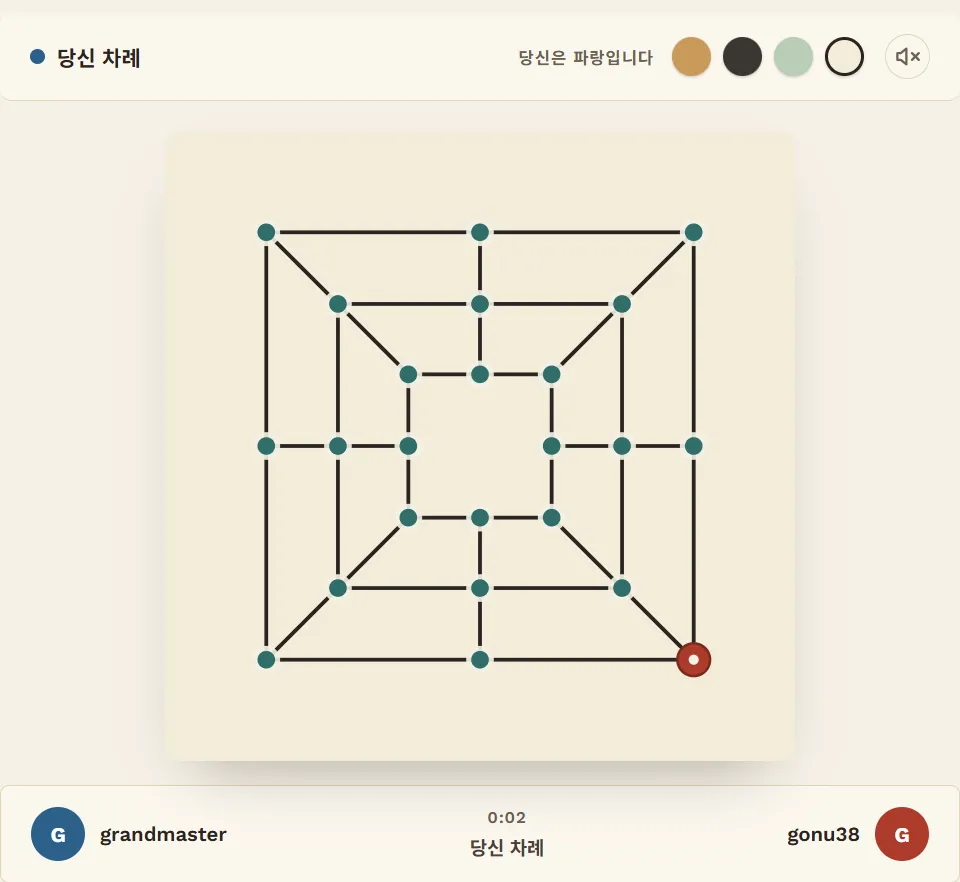
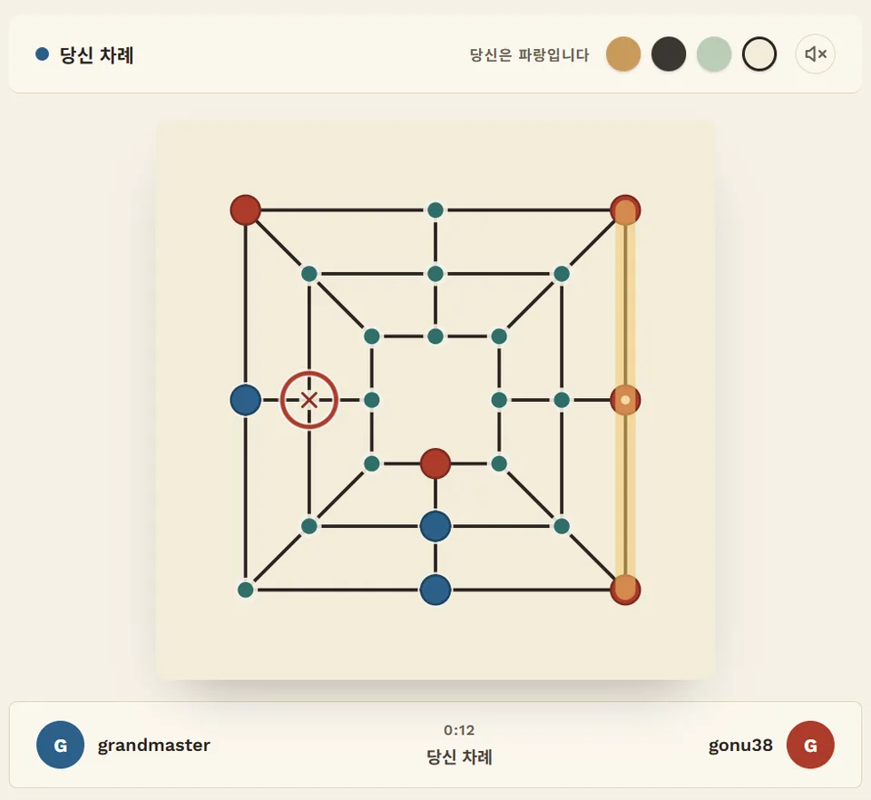
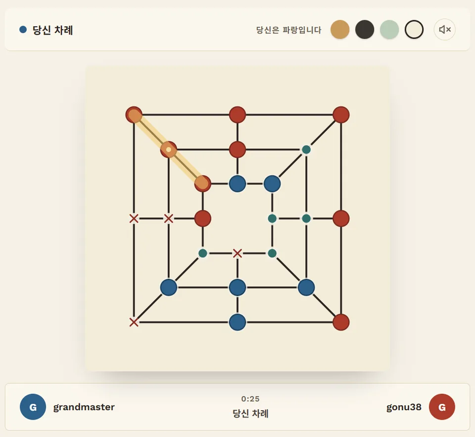
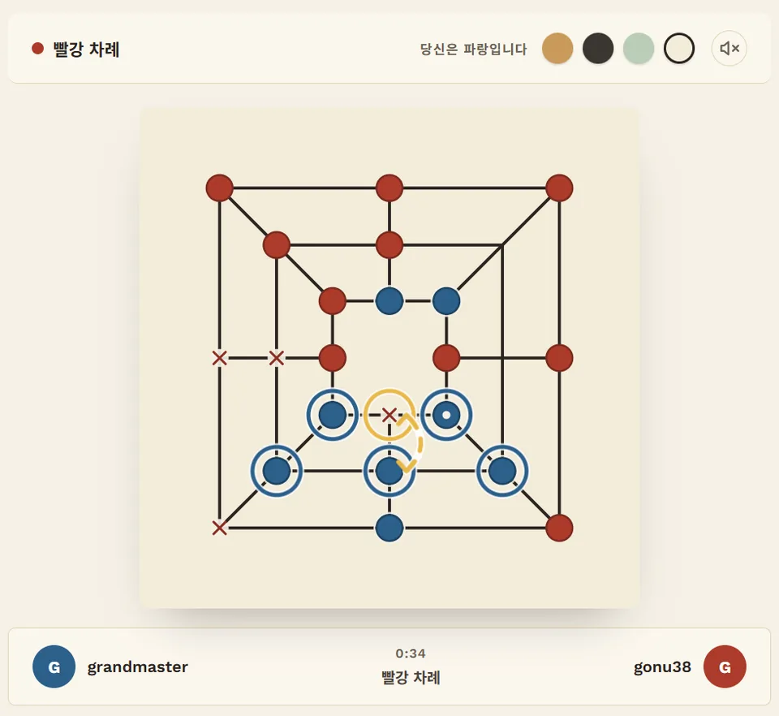
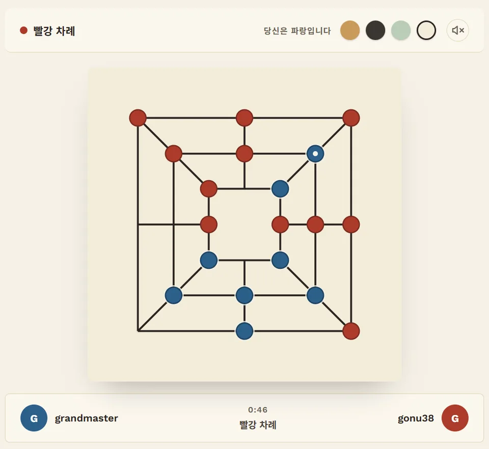
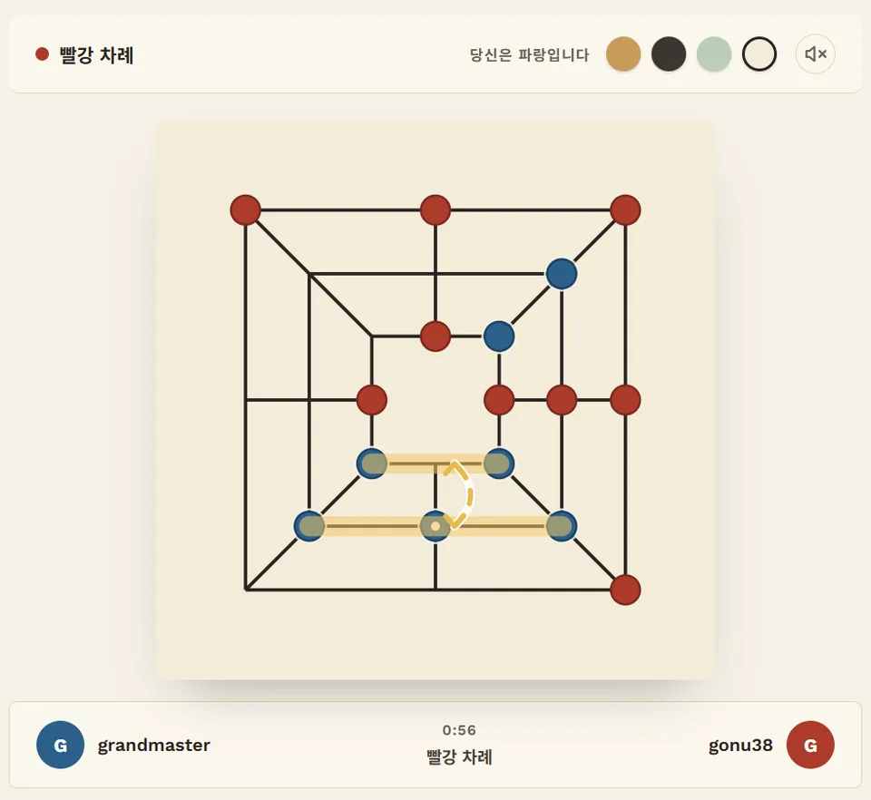
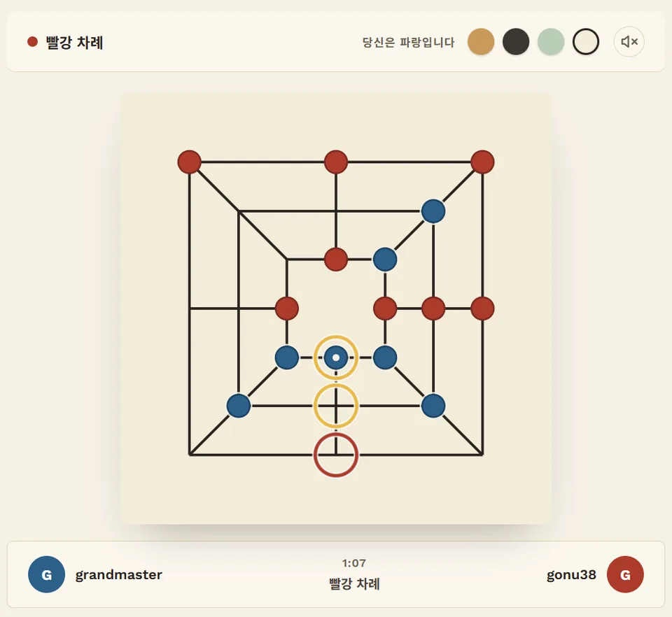
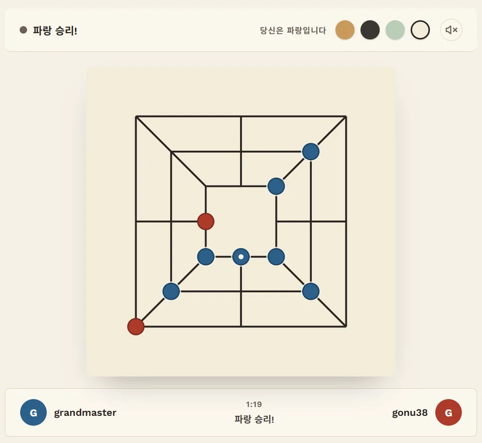

전략 가이드 · 참고누
왕복 꼰: 참고누는 이걸로 이긴다
참고누는 고누 중 가장 묵직한 게임이에요. 둘이서 말 12개씩, 세 겹 사각형 24칸 판에서 둡니다. 전반 내내 앞서다가도 지는 일이 흔한데, 이유는 거의 하나예요. 상대가 왕복 꼰을 만들었기 때문이죠. 실제로 그렇게 끝난 한 판을 같이 따라가 보고, 직접 만드는 법과 막는 법까지 정리했어요.
160판 중 157판한쪽만 왕복 꼰을 만든 판에서, 만든 쪽이 이긴 횟수예요. (우리 사이트 최강 AI끼리 둔 400판 중 164판에서 왕복 꼰이 나왔어요.)
30초 만에 판 읽기
24칸은 세 겹 사각형 위에 있어요. 각 변의 가운데가 세 사각형을 가로질러 이어지고, 서양 모리스 게임과 달리 모서리끼리도 대각선으로 이어져요. 그래서 꼰이 되는 줄은 모두 20개예요. 자리마다 힘이 달라요.
| 자리 | 이어진 칸 | 걸린 줄 |
|---|---|---|
| 가운데 사각형 모서리 | 4 | 3 |
| 가운데 사각형 변 중앙 | 4 | 2 |
| 바깥·안쪽 사각형 모서리 | 3 | 3 |
| 바깥·안쪽 사각형 변 중앙 | 3 | 2 |
가운데 사각형의 모서리 네 곳이 명당이에요. 움직일 길도 가장 많고 꼰에 걸리는 줄도 가장 많거든요. 단, 게임의 첫 수는 바깥 사각형 모서리 네 곳 중 하나에만 둘 수 있어요.
실제 대국으로 보기
빨강이 먼저 둡니다. 전반 내내 별것 없어 보이는 파랑의 아래쪽을 눈여겨보세요.








왕복 꼰 만드는 법
- 나란한 두 변 + 다리 하나. 직선 다리로 이어진 두 변을 고르세요. 예를 들어 가운데 아래 변과 안쪽 아래 변이에요. 각 변의 양 모서리를 잡고, 다리 위에 말 하나를 둬요.
- 빈자리는 상대가 못 오게. 왔다 갔다 하는 말이 비우는 칸 옆에 상대 말이 있으면, 상대가 들어와서 막아요. 바깥이나 안쪽 사각형의 변 중앙이 딱 좋아요. 이웃이 내 모서리 둘과 다리뿐이거든요.
- 배치 단계에서 미리 짓기. 후반전엔 새 말을 놓을 수 없어요. 상대에게 꼰을 몇 번 내주더라도 전반에 틀을 먼저 짓는 게 남는 장사예요. 위 대국의 파랑처럼요.
- 잡기로 빈자리를 만들 수도 있어요. 배치 단계에서 잡아서 생긴 자리는 후반전이 시작될 때까지 아무도 못 채워요. 다리용 빈칸으로 딱이죠.
왕복 꼰 막는 법
- 틀의 한 칸을 먼저 차지하기. 왕복 꼰엔 다섯 칸이 필요해요. 배치 단계에서 그중 한 칸만 먼저 막아도 통째로 무너져요.
- 틈은 꼰이 닫히기 전에 막기. 틈 옆으로 가는 건 그 말이 살아남아야 의미가 있어요. 위 대국처럼, 왕복 꼰은 막으러 온 말부터 잡아요.
- 열린 쪽을 역습하기. 왕복하는 말이 한쪽 꼰을 떠나면, 남은 두 말은 더 이상 꼰으로 보호받지 못해요. 내 꼰을 만들어서 그 말부터 잡으세요.
- 움직일 길 세기. 상대 차례에 둘 수 있는 수가 하나도 없으면 바로 이겨요. 판이 빽빽한 참고누에선 가둬서 이기는 판이 꽤 많아요.
직접 해보세요
마스터 AI는 왕복 꼰을 만들고 막을 줄 알아요. 내 왕복 꼰이 먼저 돌아가게 해보세요.